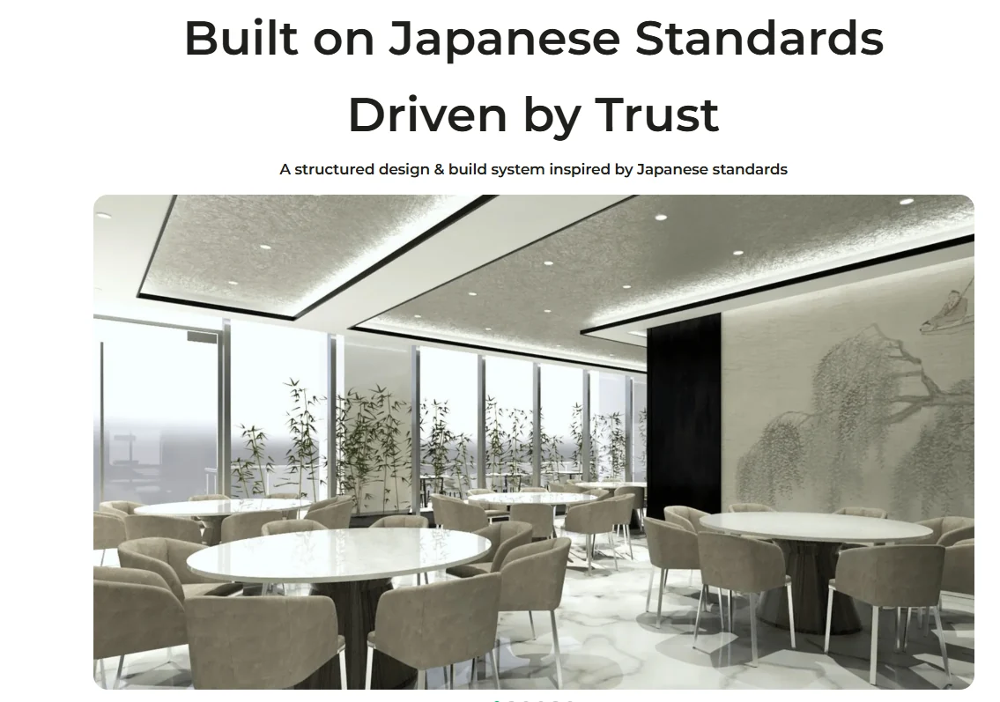

Design & Build
GGE Design Studio: Interior Design Built on Japanese Standards in Malaysia

At GGE Design Studio, we believe a well-designed interior should make everyday life easier, whether it is a busy restaurant, a welcoming workplace or a family's home. Based in Kuala Lumpur, our studio provides Japanese interior design in Malaysia through a coordinated design and build approach. Our team brings more than 20 years of combined industry experience, including hands-on work with Japanese companies and homeowners, to help clients develop thoughtful spaces suited to their needs and lifestyles.
We offer commercial interior design services for restaurants, offices, retail outlets and healthcare facilities, with practical space planning, technical drawings, construction coordination and project management. Our Japanese home interior design and renovation services cover apartments, condominiums and landed properties, combining functional layouts, custom storage, 3D visualisation and carefully selected materials. Every space is designed around how people actually use it, rather than following a single visual formula.
What makes GGE different is J-Standard, our internal execution framework inspired by Japanese working practices. For clients seeking a Japanese contractor in Malaysia, our approach emphasises precise documentation, transparent communication, accountable supervision and quality checks from planning to handover. The design and project teams work together to keep the agreed concept and construction scope aligned. From the first site consultation to the final inspection, our goal is to provide an organised renovation experience and a finished space that clients can use with confidence. Explore our completed project portfolio to discover the range of environments we design.
Contact GGE Design Studio — Japanese Interior Design Malaysia
- Name: GGE Design Studio
- Address: Danau Business Centre, 5-2-7, Jalan 3/109F, Off, Jln Klang Lama, Taman Danau Desa, 58100 Wilayah Persekutuan, Wilayah Persekutuan Kuala Lumpur
- Phone: +60 11-5922 6150
- Working Hours: Monday to Friday: 8.00a.m - 5.00p.m
- WhatsApp: https://wa.me/0195782029